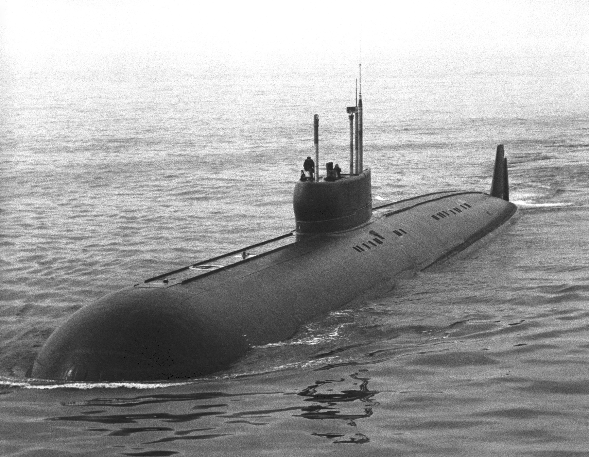

K-222 Submarine
K-222 was the only ship of the Project 661 Anchar class (NATO reporting name: Papa) was a Soviet
Navy nuclear-powered cruise-missile submarine built during the Cold War. Originally named K-18, the submarine was renamed
K-162 while still under construction in 1965, and then K-222 in 1978. Commissioned in 1969, the boat was armed with short-range,
anti-ship cruise missiles to carry out her mission of destroying American aircraft carriers. The missiles could be fitted with
either conventional or nuclear warheads. K-222 was the world's fastest submarine and was the first submarine built with a titanium hull.
The Soviet Navy rejected a plan to place the design into series production as its flaws outweighed its advantages, but it pioneered the technology needed to work with titanium on a large scale, which enabled the subsequent construction of more successful designs using titanium.

© Website created with Farid Huseynli